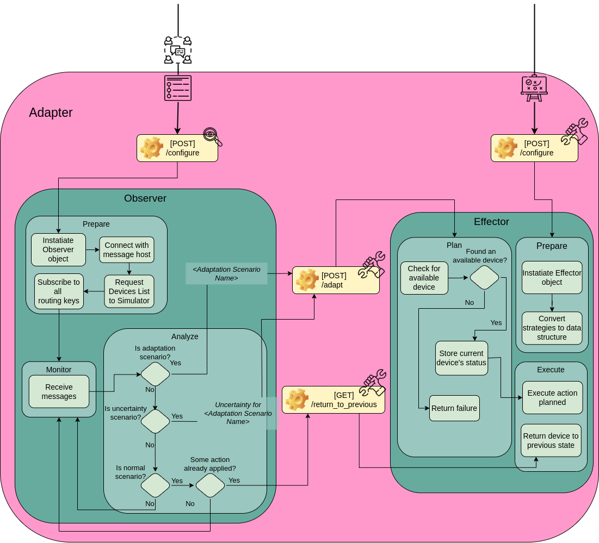

@@include('header.htm')

@@include('blocks/navigation-inner.htm')

<!-- details page -->
<section class="pt-5">
  <div class="container shadow section-sm rounded">
    <div class="row">
      <!-- sidebar -->
      <div class="col-lg-3">
        <ul class="sidenav">
          <li title="Genreral Info" class="sidelist">
            <a href="list.html">Genreral Info</a>
          </li>
          <li class="sidelist parent active">
            <a href="components.html">Components</a>
            <ul>
              <li class="sidelist">
                <a href="configurator.html">Configurator</a>
              <li class="sidelist active">
                <a href="simulator.html">Simulator</a>
              <li class="sidelist">
                <a href="adapter.html">Adapter</a>
            </ul>
          </li>
          <li class="sidelist parent">
            <a href="list.html">Tutorial</a>
            <ul>
              <li class="sidelist">
                <a href="single.html">Startup</a>
              <li class="sidelist">
                <a href="envaiot-ml.html">EnvAIoT-ML</a>
            </ul>
          </li>
        </ul>
      </div>

      <!-- body -->
      <div class="col-lg-8">
        <div class="px-lg-5 px-4">
          <h2 class="mb-4 font-weight-medium">Components</h2> <!-- main content -->
          <div class="content">
            <p>
              The Adapter component functions as shown in Figure below. It is made up of the Observer and the
              Effector modules, which together carry out the MAPE loop activities. The former is in charge of
              monitoring and analyzing the system, while the latter is in charge of planning and carrying out
              the adaptation. Both of them offer endpoints that may be configured, with the Observer receiving
              the communication and scenarios modeling and the Effector receiving the modeling of the adaption
              strategies. The Observer is the only one who uses the Effector's endpoints for seeking an adaptation
              and for going back to the initial state.
            </p>
            <p></p>
            <p>
              After the Observer receives the modeling, the object is created and then connects to the IoT system
              via the communication setup. After that, it connects to all of the routing keys by requesting all
              of the devices from the Simulator component. Because the Observer gets all messages sent and
              received by the devices, it is aware of the context of the system from the messages that are
              exchanged. Once this module has subscribed to every routing key, it operates as a thread and begins
              keeping track of the system. A dictionary, a data structure that contains data with key:value pairs,
              is created when the Effector is modeled, after which the object is initially created. This module
              just responds to requests, hence it is reactive. As a result, it waits for the Observer to give the
              signal that an adaptation must be carried out.
            </p>
            <p>
              Every time a message is received, an analysis is done to determine the current scenario. When a
              scenario is discovered, incoming messages are momentarily saved and deleted since a scenario is
              built up from a series of messages. In order to assess the scenario, it must first determine
              whether it is an adaptation scenario. If it is, the request for the adaptation scenario is forwarded
              to the <i>"/adapt"</i> Effector endpoint. The Effector examines the strategies dictionary when a
              request is received by that endpoint to determine which devices are mapped in the actions for the
              specified scenario. By requesting the Simulator component, it then determines whether the device is
              available. Any status other than "inactive" is considered to be available.
            </p>
            <p>
              If the scenario detected by the Observer was not an adaptation, check to see if it is an uncertainty
              scenario. When a situation involving adaptation has already been handled but it was not able to
              address the issue, that scenario arises. The Observer also sends a request to the <i>"/adapt"</i>
              endpoint when an uncertainty is found, but this time it warns an uncertainty is there for the
              specific adaption scenario. The process to act upon uncertainty is the same for the adaptation
              scenario. It is the same as not having a device at hand to act if there is no action mapped for
              that scenario. As a result, the system is unable to adapt.
            </p>
            <p>
              If the detected situation is normal and occurs after an adaptation (for an adaptation or
              uncertainty scenario), the cautious adaptation is finished by resetting the affected devices to
              their previous status. However, in only happens when the adaptation action changed some device's
              status, since it also has the option of just sending a message. The Observer does this by
              requesting the <i>"/return_to_previous"</i> Effector endpoint. Effector sends a new request to
              update the device's state when it receives a request from that endpoint by using the
              device's previously saved status.
            </p>
            <p>
              The architecture of the Adapter modules is composed of distinct layers, meaning that each one
              corresponds to a different execution. The endpoints must be specified at the Controller layer.
              Each module's object is specified in the Model layer. The Service layer, implements specific module
              operations, where the Observer contains functions for monitoring and analyzing the system and the
              Effector for planning and executing.
            </p>
          </div>
          <!-- navigation -->
          <nav class="pagination">
            <a class="nav nav-prev" href="/simulator.html"><i class="ti-arrow-left mr-2"></i>
              <span class="d-none d-md-block">Simulator</span></a>
            <a class="nav nav-next" href="/adapter.html"> <span class="d-none d-md-block">Tutorial</span><i
                class="ti-arrow-right ml-2"></i></a>
          </nav>
        </div>
      </div>
    </div>
  </div>
</section>
<!-- /details page -->

@@include('blocks/footer.htm')

@@include('footer.htm')